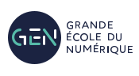
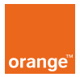
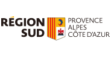

Qui sommes-nous?
La Plateforme_ est une école du numérique et des nouvelles
technologies co-fondée avec le Club Top 20 réunissant les grandes
entreprises de la Métropole Aix Marseille. Elle comprend une offre de
formations diversifiées destinées à former des codeurs et développeurs
web, des experts en sécurité, des ingénieurs spécialisés en Intelligence
Artificielle, et des cadres d’entreprises au travers de cycles de
formations continues.
Nos partenaires
La Plateforme_ est membre du programme Grande Ecole du
Numérique. Elle est soutenue par de grandes entreprises du territoire
comme le Crédit Agricole Alpes Provence , par la Région Sud, le
Département des Bouches du Rhône et la Métropole Aix Marseille
Provence.


